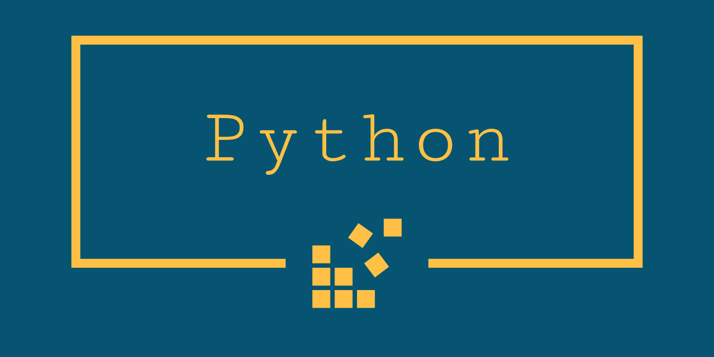

「Python」は、1991年にオランダ人のグイド・ヴァン・ロッサム氏によって開発されたプログラミング言語です。実は結構昔からある言語なんですよ！Pythonというユニークな名前は、イギリスのBBCが製作した大ヒットコメディ「空飛ぶモンティ・パイソン」から来ているそうです。通常、プログラムの規模が大きくなり複雑になってくるとコードが見づらくなります。見づらくなることで読み間違いや書き間違えなどのミスが起こりやすくなり開発効率が落ちてしまうことがあります。 Pythonではそんな読み間違いや書き間違いを減らそうと考え抜かれてており覚えやすく扱いやすい言語だといえるでしょう。では、Pythonはどれくらい人気があるのでしょうか？
Pythonの特徴とメリット
Pythonはコードの読みやすさを重視した言語です。文法がシンプルで必要最低限のものしか用意されていないので、読みやすく書きやすい言語なんです！一つのことを書くのに何通りも書き方は用意されていません。そのために他人の書いたコードも比較的読みやすいものになります。他人が書いたコードが読めることは開発現場においてとても大切なことなんです。この文法のシンプルさと可読性の高さからプログラミング初心者にもわかりやすく、学びやすい言語だと言われています。 また、Pythonのプログラミングがシンプルになる理由には「オフサイドルール(Off-side Rule)」というものがあります。これは、if文などのブロックを字下げ(インデント)で指定するというものです。これによって誰が書いても同じコードになるため、Pythonのプログラムは書きやすく読みやすいモノになっています。ライブラリを一言で説明すると、役に立つプログラムをまとめたものです。Pythonには機械学習などで使う機能をまとめたたくさんのライブラリがあります。 Pythonを苦手と考えずちょうせんしてみてください！！NET情報によると初心者にもオススメの言語らしいです。私も時間があったら挑戦してみようと思います。
Pythonでできること、できないこと
先程も軽く紹介しましたが、Pythonで作れるものは多くあります。例えば「Webアプリケーション」「デスクトップアプリケーション」「組み込みアプリケーション」「ゲーム」 「機械学習（人工知能）」これらのアプリやプログラムをPythonで作ることができるんです！これだけのサービス・アプリが作れるってことは需要も高いといえるでしょう。先程、「Youtube」や「Evernote」はPythonで作られていると書きました。その他にも「Instagram」もPythonで作られています。Webアプリについて解説してきましたがその他にもゲーム分野ではPygameなどといったライブラリもありPythonでゲームを作ることもできます。さらに、kivyというGUIアプリケーション作成に使うライブラリ等を用いれば、簡単にiPhoneなどのスマホアプリだって作れます。Pythonには利用者・開発者がたくさんいるので、いろんなライブラリが作られて自分が作りたいものを作りやすい環境が整っているんですね！
Pythonをダウンロードする
皆さんお待ちかねのPythonのダウンロード方法ですが！！このサイトで紹介しようと思ったのですが時間の関係上リンクをはりますので、そこからダウンロード方法を調べてダウンロードを行っていただけたらと思います。私も、独学で初めたばかりですが、割と今までに学んだ部分と類似するものがあるのでスムーズに学習に取り組めると思います。
こちらをCLICK